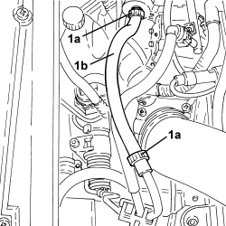

1080E63 FUEL VAPOR HOSE BETWEEN RIGID PIPE AND CUT OFF SOLENOID R R
- Path
- Procedures > 10 ENGINE > 1080 EMISSION CONTROL SYSTEM > 1080E EVAPORATION CONTROL SYSTEM > 1080E63 FUEL VAPOR HOSE BETWEEN RIGID PIPE AND CUT OFF SOLENOID R R
- Kind
- repair procedure (removal / refitting; the operation number is the code)
- Applies to
- engines: 1.8; all production periods
- Interactive page
- https://sloeber94.github.io/elrnDB-fCrm/en/#/194003035
Applies to: engines: 1.8; all production periods
 Removing
Removing
 Refitting
Refitting1. Loosen the bands (1a) and remove the flexible fuel vapour pipe (1b) between the rigid pipe and the cut out solenoid valve.

Applies to: engines: 1.8; all production periods
Refitting
Removing- Place the flexible fuel vapour pipe between the rigid pipe and the cut out solenoid valve in position and tighten the bands.